UX audit of CreatorBrio today
What a person meets when they open the app on main at 3fc7f2e, what already works, and what stands between CreatorBrio and a coherent creative studio. Each finding names its evidence, a severity and the milestone that resolves it.
Method
The app was run as its own isolated instance, from a separate git worktree on a separate port, with its own data folder seeded with synthetic content through the app's public API: three brands, eight carousels and one template. The founder's checkout, data and running app on port 3000 were not touched.
Every screen was captured at 1440, 1280, 768, 390 and 320 pixels wide where it applies, and the source of each screen was read to confirm what the captures show. Colour contrast was computed with the WCAG 2.x formula from the tokens in src/app/globals.css.
Two things were deliberately not exercised
No design run was started, because each one is a paid Claude run; the chat was read, not used. The Video Studio editor was not opened. Pairing needs a one-time code from npm run studio:pair; the script also documents a non-interactive option, --no-tty-check, that the repository's own tests use, but this session's permission policy refused it and it was not worked around. Studio findings come from its source and from the screenshot the README already publishes; a live Studio pass is listed under risks.
What ships today
CreatorBrio already does far more than its first screen suggests. Nothing here may be lost in 2.0; the capability matrix maps each line to its place in the new structure.
| Capability | Status | Where a person finds it today |
|---|---|---|
| Design a carousel by chatting, with a plan first and a saved Creative Brief | Works | Editor chat. Needs Claude Code; a five-slide design takes a few minutes. |
| Brands: five colours, heading and body fonts, logo, style keywords, several brands | Works | Brand selector and pencil on the dashboard; the gear icon. Brands cannot be deleted. |
| Sizes 1:1, 4:5 and 9:16 | Works | Create dialog and the editor's ratio menu. Changing size does not reflow slides. |
| Reference images and up to three pasted links | Works | Editor chat. |
| Generated and edited images through a local image service | Optional | Inside a design run, when the separate service is installed. No screen says whether it is. |
| Preview, safe zones, full window, drag to reorder, five undo steps per slide, delete, rename, duplicate | Works | Editor toolbar and filmstrip; duplicate on hover over a dashboard card. |
| Recover an unfinished design: keep saved slides, accept them, or Continue | Works | Editor notices; Export waits for acceptance. |
| Templates: save a carousel, start from one | Works | Dashboard tab and editor toolbar. |
| Captions and hashtags, shown with Copy | Works | Below the editor preview, when the agent wrote them. |
| Instagram PNG ZIP, single PNG, LinkedIn PDF with real text | Works | Only inside the editor's Export menu. |
| Video Studio: import by path, timeline, trim, split, titles, captions, undo, verified MP4 | Early | Only by typing /studio. No link exists anywhere else in the app. |
| AI-assisted video editing | Not built | Nowhere, correctly. |
| Custom font uploads and style presets | Unusable | API only (#159). |
Ranked findings
P1 blocks the 2.0 goal or excludes people. P2 costs time or trust every session. P3 is polish. The milestone column refers to the blueprint.
| # | Finding | Evidence | Sev. | Fixed in |
|---|---|---|---|---|
| A1 | The Video Studio is unreachable. No page, menu or link leads to /studio; a person has to know the URL. The product's main work in progress is invisible. | No reference outside src/app/studio and src/components/studio; dashboard-1440 | P1 | M2 |
| A2 | CreatorBrio presents itself as a carousel tool. The only call to action is "New Carousel" under "Create Instagram carousels with AI". The LinkedIn PDF appears only inside the editor's Export menu, and a Reel cover is a one-slide 9:16 carousel that no screen names. | dashboard-1440, create-dialog-1440, editor-export-menu-1440; src/lib/export-formats.ts | P1 | M2 |
| A3 | Projects cannot be opened by keyboard. A card is a div with a click handler and no role or tab stop. Tab lands only on each card's Duplicate and Delete buttons, which stay invisible while focused, so a keyboard user can neither open a project nor see where focus is. | src/components/dashboard/CarouselCard.tsx | P1 | M2, M3 |
| A4 | Primary buttons and accent text fail WCAG AA. White on #e94560 is 3.83:1, accent text on the page background 3.67:1, red error text 3.76:1, and input borders 1.26:1 against the 3:1 that control boundaries need. See measurements. | src/app/globals.css; #169 | P1 | M2 |
| A5 | Phones get a desktop layout. The dashboard's brand row runs off the right edge at 390 and 320 pixels and clips "Add brand"; the editor squeezes chat, canvas and filmstrip side by side until the canvas is a sliver. | dashboard-390, dashboard-320, editor-390; #170 | P1 | M2, M4 |
| A6 | Card actions appear only on hover. Duplicate and Delete sit at zero opacity until the pointer is over the card, so touch and keyboard users cannot find them. Save as template exists only in the editor. | CarouselCard.tsx | P2 | M3 |
| A7 | Deleting a template is immediate. One click on the bin removes it with no confirmation and no undo. | src/components/templates/TemplateCard.tsx | P2 | M3 |
| A8 | Save as template says nothing. The editor gives no confirmation or error. | #158 | P2 | M4 |
| A9 | The first visit opens a five-step brand modal. It can be closed, but it opens again on every visit until the brand has a name, and it stands between a new person and seeing what the product does. | first-run-1440, first-run-390 | P2 | M2 |
| A10 | The empty state promises "beautiful slides in seconds". The README says a five-slide design takes a few minutes. The first promise a person reads is wrong. | empty-dashboard-1440; README | P2 | M2 |
| A11 | The gear labelled Settings edits the brand. There is no settings page, so Claude Code status, Studio pairing and where data lives have no home. | src/components/layout/TopBar.tsx | P2 | M2 |
| A12 | Names do not match what people make. Everything is a "Carousel", 9:16 is labelled "Story" in places, the page heading repeats the product name, and the Studio speaks of "productions". | dashboard-1440, create-dialog-1440 | P2 | M2 to M4 |
| A13 | The library will not scale. No search, filter, sort or pagination; the list request returns every slide's HTML and undo history for every carousel; every card mounts a live iframe. | src/app/page.tsx, GET /api/carousels | P2 | M2, M3 |
| A14 | Cards say little about the work. A card shows the first slide, the size and a date; not the format, slide count or brand, and the date carries no time. | dashboard-1440 | P2 | M2, M3 |
| A15 | The editor toolbar is a row of icons without visible labels. They have screen-reader names and most have tooltips, but a sighted person has to hover to learn them. Delete sits beside Save as template; the size menu is prominent, yet changing it does not adapt the slides. | editor-1440 | P2 | M4 |
| A16 | Nothing explains the Studio before its pairing wall. The pairing panel clearly says to run npm run studio:pair, but nothing outside /studio says what the Studio is, that it is early, or why a browser must be paired. The page also logs 401 responses before pairing. | studio-pairing-1440; src/components/studio/PairingPanel.tsx | P2 | M2 |
| A17 | The product name appears twice at the top of the dashboard, in the top bar and as the page heading. | dashboard-1440 | P3 | M2 |
| A18 | Loading placeholders do not match what loads. The dashboard shows three and Templates two grey blocks of one fixed height, whatever the content; the editor shows a centred spinner. | src/app/page.tsx, TemplateGallery.tsx, src/app/carousel/[id]/page.tsx | P3 | M2, M3 |
| A19 | Template failures are silent. A failed load is shown as "no templates", and a failed "Use template" does nothing at all. | src/components/templates/TemplateGallery.tsx | P3 | M3 |
| A20 | Create dialog labels are not tied to their inputs, so a screen reader announces the name and size fields without their labels. | src/components/ui/create-carousel-dialog.tsx | P3 | M2 |
| A21 | Custom fonts and style presets are API-only and cannot be used from any screen. | #159 | P3 | Tracked in #159 |


Measured contrast of today's tokens
Ratios from the WCAG 2.x relative-luminance formula. Since #168, the chat and run notices draw their text in the ink colour and use red only for icons and borders. Text needs 4.5:1; large text and the boundaries of controls need 3:1. The proposed tokens and their measurements are on the design system page.
| Pair | Foreground | Background | Ratio | Needs | Result |
|---|---|---|---|---|---|
| Primary button label | #ffffff | #e94560 | 3.83 | 4.5 | Fails |
| Accent text on page background | #e94560 | #fafafa | 3.67 | 4.5 | Fails |
| Accent text on cards | #e94560 | #ffffff | 3.83 | 4.5 | Fails |
| Error text on cards | #ef4444 | #ffffff | 3.76 | 4.5 | Fails |
Dashboard load-error heading on its tint (bg-destructive/5 over the page) | #ef4444 | #f9f1f1 | 3.38 | 4.5 | Fails |
| Input border on cards | #e5e5e5 | #ffffff | 1.26 | 3.0 | Fails |
| Input border on page background | #e5e5e5 | #fafafa | 1.21 | 3.0 | Fails |
| Muted text on cards | #737373 | #ffffff | 4.74 | 4.5 | Passes |
| Notice error icon and border on its tint (text there is ink) | #ef4444 | #fef2f2 | 3.44 | 3.0 | Passes |
| Notice warning icon on its tint | #b45309 | #fffbeb | 4.84 | 3.0 | Passes |
Journeys today
Make a LinkedIn document
Nothing on the dashboard mentions LinkedIn. A person creates a "carousel", designs it, opens Export and discovers the PDF option there. Four steps in, they learn the product could do what they came for.
Make a Reel cover
A person has to know that a cover is a 9:16 carousel with one slide, pick "9:16", ask the agent for one slide, then choose the single PNG export, which appears only when the carousel has exactly one slide. No screen names the outcome.
Edit a video
A person has to know that /studio exists, type it, then pair the browser from a terminal. Nothing in the app leads there.
First visit
A five-step brand modal opens before anything else. The product's purpose is behind it.
Strengths to keep
- The editor's core loop is sound. Chat on the left, a true-size sandboxed preview, a filmstrip with drag, undo and delete. 2.0 reorganises around it rather than replacing it.
- Honest recovery. Interrupted runs keep their slides, Export waits for acceptance, and Continue makes only what is missing. Few tools are this careful.
- Brand as a fixed property of a project. A carousel keeps its brand for life, which keeps every project consistent and makes "Creating for Brand X" a truthful promise.
- Exports at exact sizes, including a LinkedIn PDF with real, selectable text.
- Existing components: Button, Badge, ConfirmDialog, Notice, SlideRenderer, CarouselPreview, SlideFilmstrip, ExportButton, ChatPanel, CaptionPanel and the brand editors all carry into 2.0. See reuse.
Current screenshots
Captured from the isolated instance with synthetic data. Select any image to open it at full size.
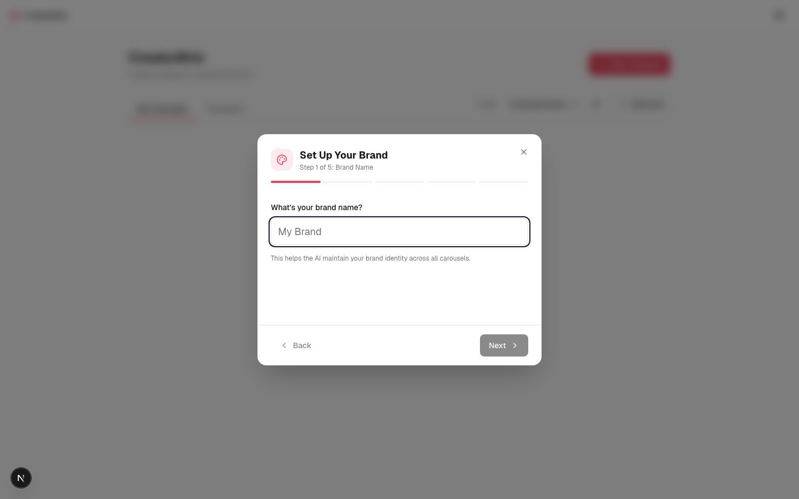
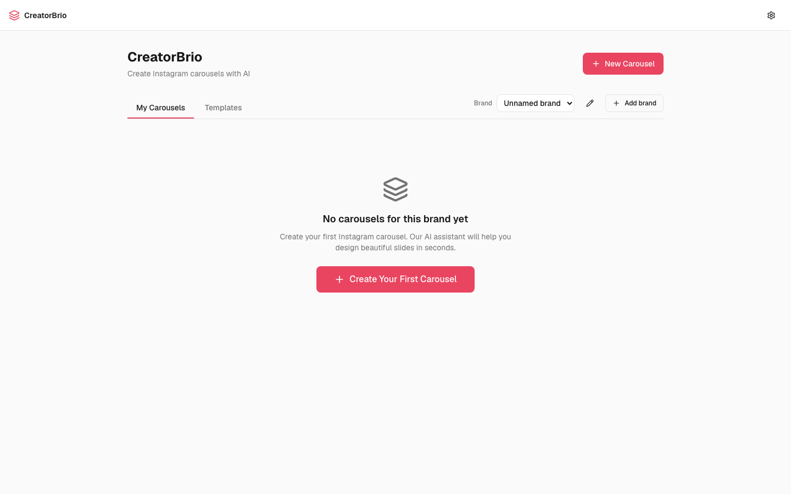
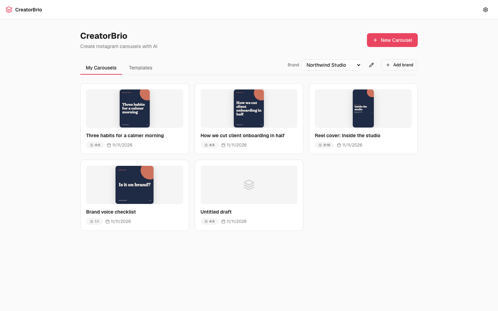

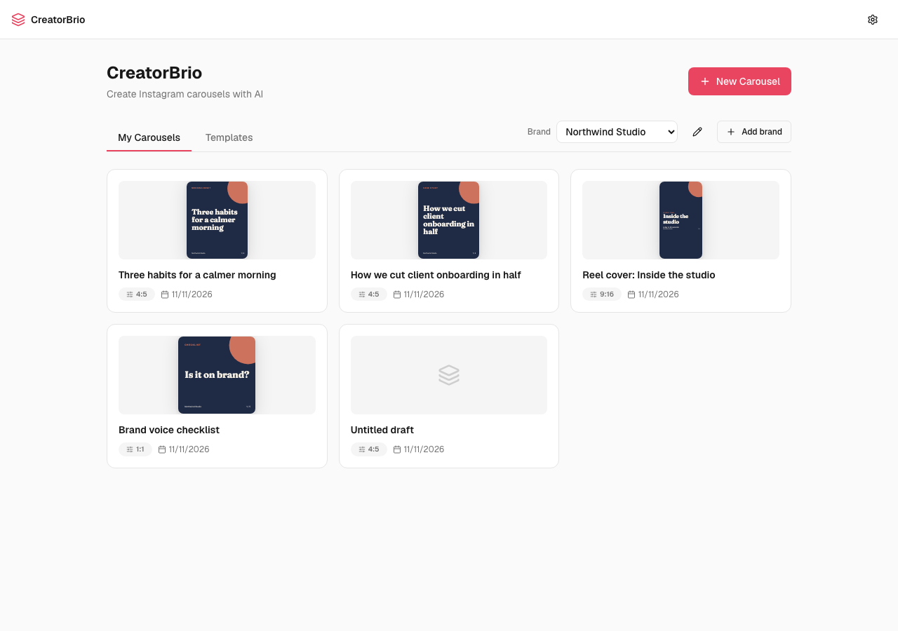

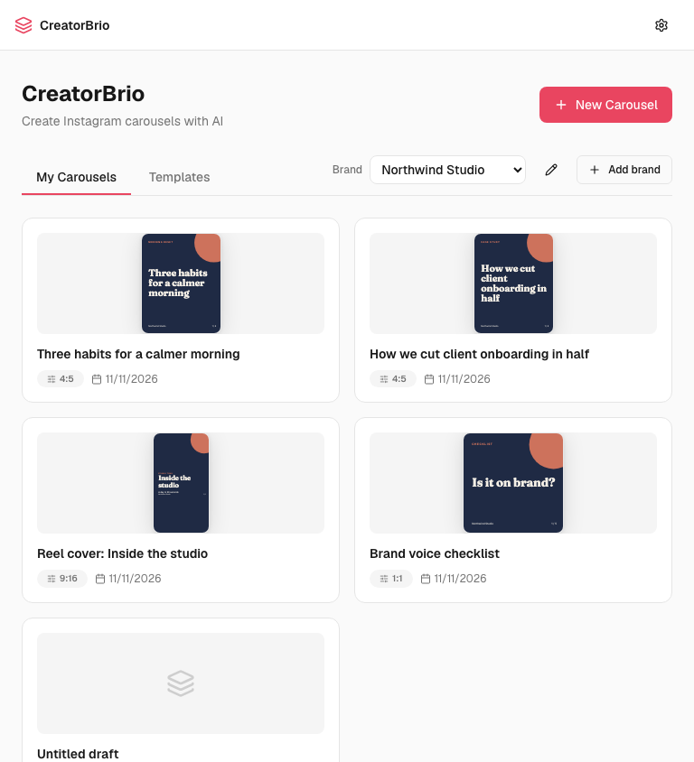

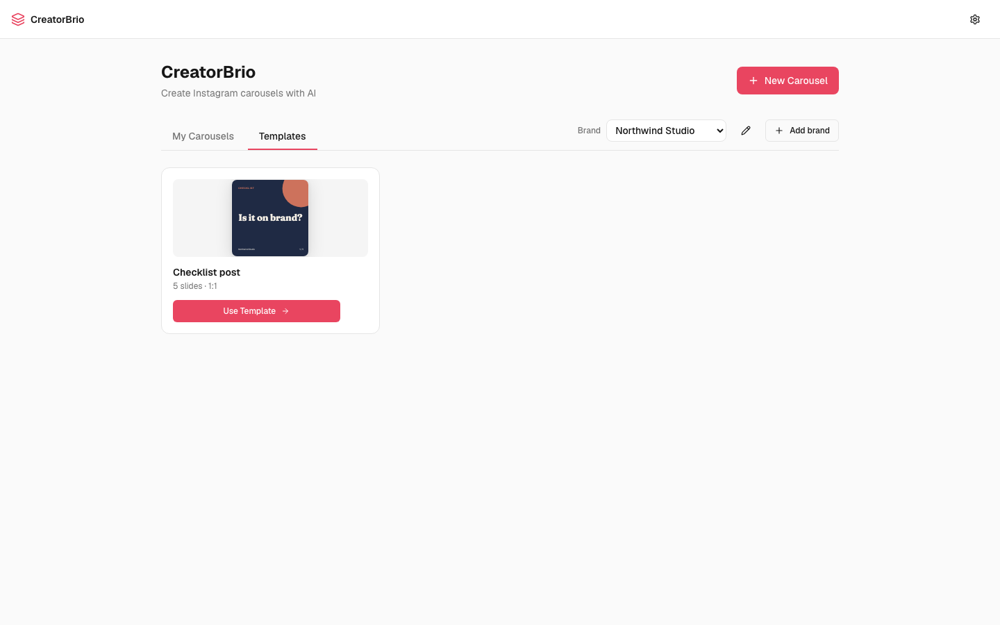
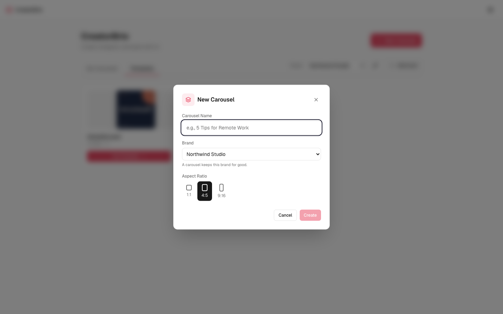
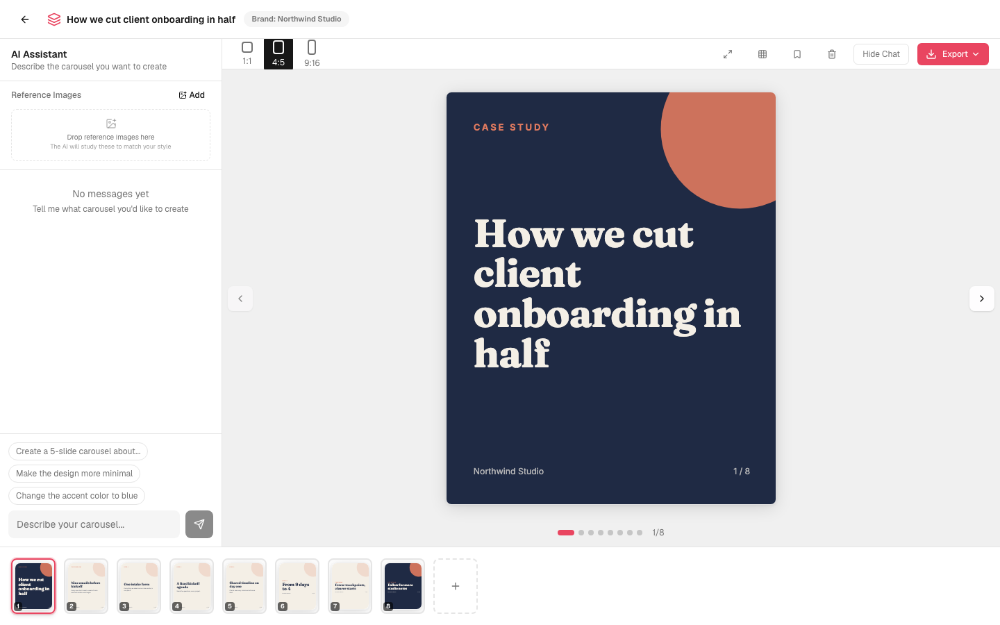
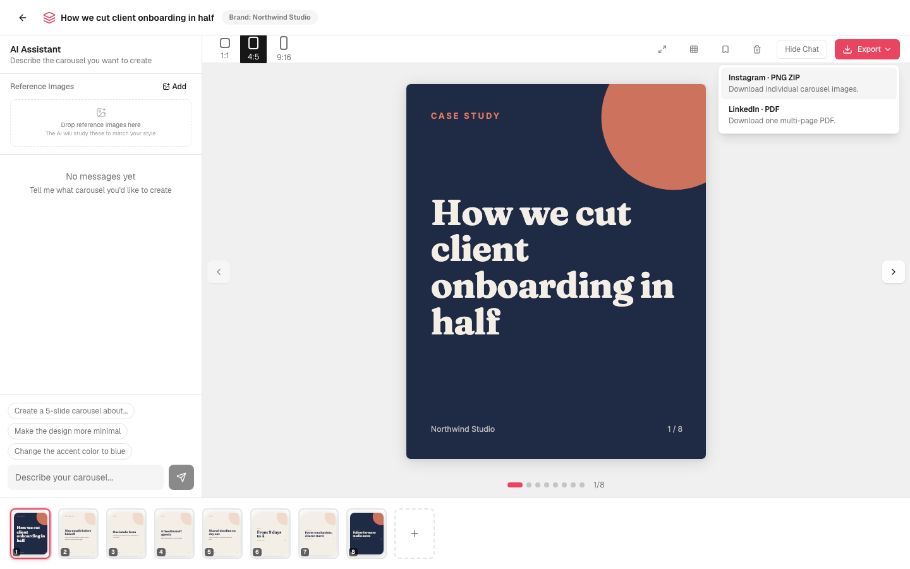

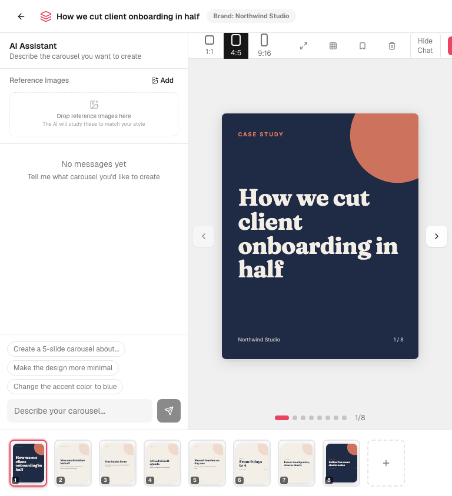
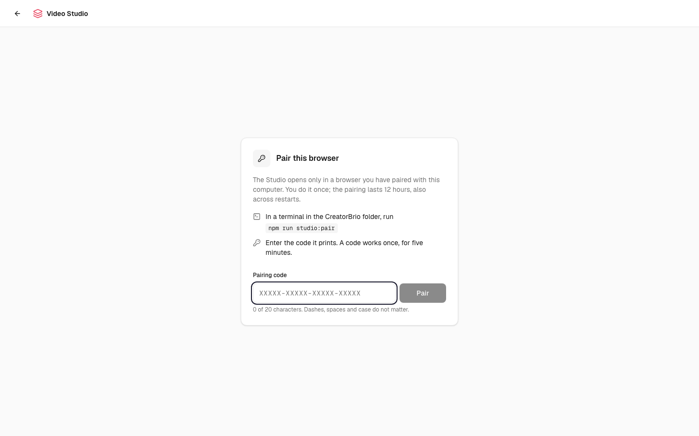

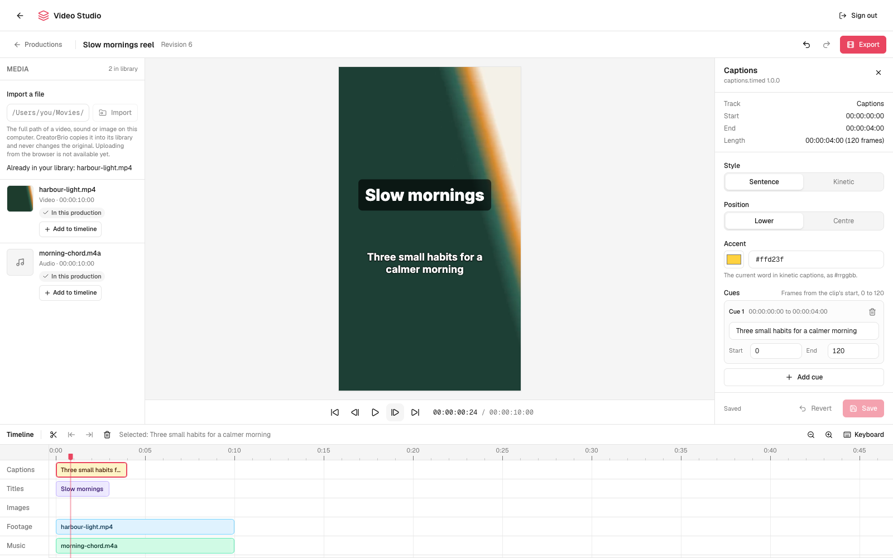
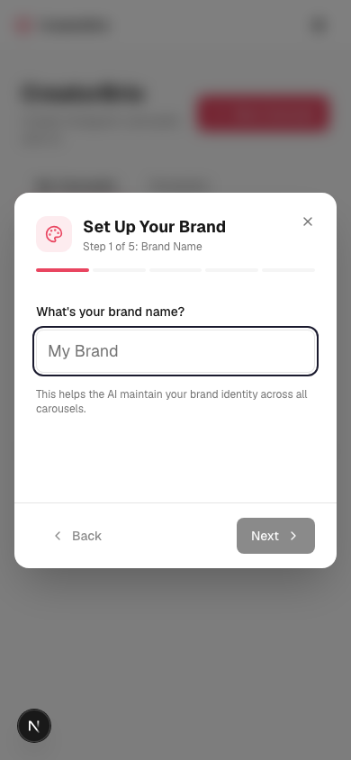

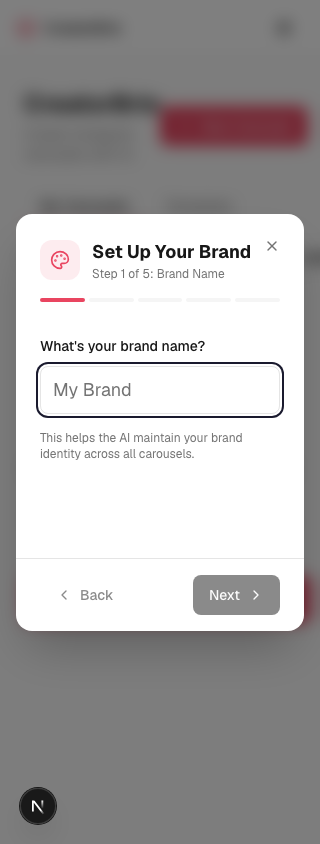

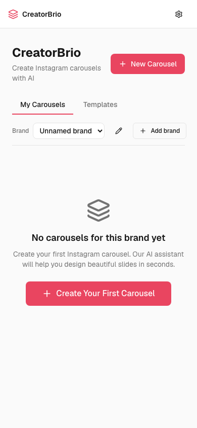
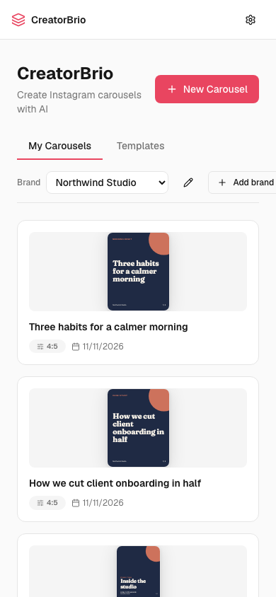
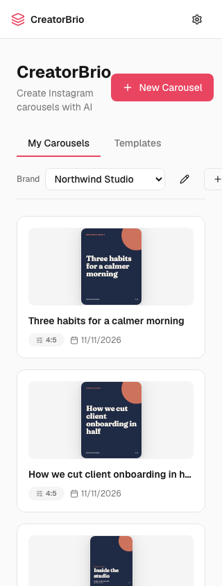
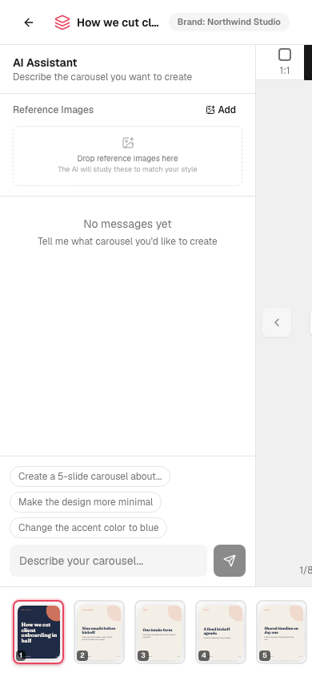

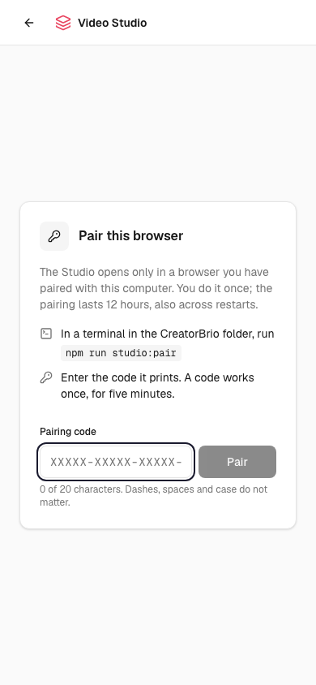